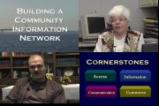
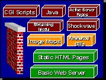

The Toolkit Video series contains four parts under the common title of Building a Community Information Network: a Video Introduction.
The videos cover the following topics:
-

Part 1: "Building a Community Information Network."
This is a half-hour video suitable for use as an introduction
and overview for a new community information team, for your content
providers, and for all stakeholders in your new project. Our
narrator introduces speakers who illuminate the potential of
community networking. Speakers include national experts in community
networking and Web publishing, including Steve Cisler (independent
consultant in community networking), Lou Rosenfeld (Author, Information
Architecture for the World Wide Web), and Dr. Joan Durrance
(University of Michigan School of Information). Pioneering community
networking sites in Michigan are also represented. Speakers include:
Gloria Coles, Cynthia Stilley, and Kay Schwartz from the Flint
Public Library; Maureen Derenzy from the Otsego Public Library
in Gaylord; Mike Mosher, a co-founder of the Genesee Freenet.
View Part 1: "Building a Community Information Network." (28:30)
-
Part 2: "Beginning Webmastering: HTML and Inline Images."
An introduction to the Hypertext Markup Language, HTML authoring
tools, and use of inline images (photographs and diagrams) in
your Web site.
View Part 2: "Beginning Webmastering: HTML and Inline Images." (Small Version) (57:11)
- 
Part 3: "Advanced Web Content Choices." An overview
of advanced Web content technologies such as ActiveX, Java, JavaScript,
CGI, and Active Server Pages. Includes commentary on digital
audio by Dr. Erik Larson from the ECHO center of the Chicago
Symphony Orchestra.
View Part 3: "Advanced Web Content Choices." (Small Version) (45:47)
-
Part 4: "Running a Web Server." An introduction
to the tasks and choices that face a site that decides to run
its own Web server hardware and software. Includes commentary
by Larry Neal of the Rochester Hills Public Library.
View Part 4: "Running a Web Server." (Small Version) (41:50)
(Clicking
on one of the above links will cause your Web browser to open
the content in a new window.)
Notes on the Toolkit Videos
Getting the Player in order to View Videos
The videos are provided in RealMedia format. You will need to have the RealPlayer installed with your Web browser. To download the free RealPlayer, go to the www.real.com web site.
The vendor, Real Networks, offers the RealPlayer at no cost, as well as versions with more features for a fee. The free player is adequate to play the Toolkit content. It is your choice whether to invest in the enhanced player.
Previewing Stills from the Video Series
You may wish to preview selected still shots from the Toolkit video series.
PowerPoint Materials Used with Videos
The PowerPoint files used in the preparation of videos 2, 3, and 4 are available for your reference and re-use subject to the provisions of the Toolkit copyright notice.
| Video | PowerPoint Format | HTML Format |
| Video 2 | video2.ppt | video2/index.htm |
| Video 3 | video3.ppt | video3/index.htm |
| Video 4 | video4.ppt | video4/index.htm |
Problems
If you have any problems viewing the videos using the above links, the following links may be used to view the videos. These links will work best off CD-ROM or over a very fast network connection. The entire video file may have to be copied to local disk before the player is started. If you have the CD-ROM, you can navigate to the directory content/videos and play the files directly using RealPlayer. From the network you might want to save the files to your disk (right-click in Windows long-click on a Macintosh) and then play them from disk using RealPlayer.
Video 1 (28:30)
Small
Large
Video 2 (57:11)
Small
Large
Video 3 (45:47)
Small
Large
Video 4 (41:50)
Small
Large
| Video 1 (28:30) | Small | Large |
| Video 2 (57:11) | Small | Large |
| Video 3 (45:47) | Small | Large |
| Video 4 (41:50) | Small | Large |
The small video files are encoded for RealPlayer 5.0 and the large video files are encoded using the G2 Encoder. If you have an older player installed, you may have better luck with the small versions of the videos.
A Note on Availability
Public libraries in Michigan that are unable to view these videos via the Web or that for any other reason wish to obtain VHS copies of the videos should contact their public library cooperative or region of cooperation in order to make arrangements to borrow VHS cassettes.